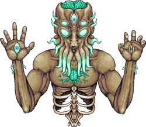

Лунный Повелитель — финальный босс Террарии в версии 1.3.0.5, из которого выпадают самые мощные предметы в игре. Победить его в одиночку может оказаться очень трудным испытанием даже с самой лучшей экипировкой. Он появляется после победы над всеми 4 Небесными башнями во время Лунных событий, или после использования Небесной печати.
У Лунного Повелителя есть 2 руки и голова, которые следует "убивать", нанося урон по глазам на них. Когда все три глаза уничтожены, открывается ядро — сердце, которое также нужно разрушить. Руки стреляют самонаводящимся снарядами и могут призвать фантомные версии Истинного глаза Ктулху, чтобы бросать их в игрока.
Голова время от времени будет стрелять очень мощным Фантомным лучом смерти, который пронесется по всему экрану в направлении игрока, после этого выстреливая наводящиеся снаряды так же, как и руки. Когда один из глаз побежден, на его месте появится Истинный глаз Ктулху, который будет преследовать игрока и призывать фантомные версии себя, которые будут передвигаться вокруг него и бросаться на игрока. Время от времени он будет призывать миниатюрные версии Истинного глаза Ктулху. После убийства всех 3 глаз, его ядро станет уязвимым. После уничтожения ядра Лунный Повелитель будет побеждён.